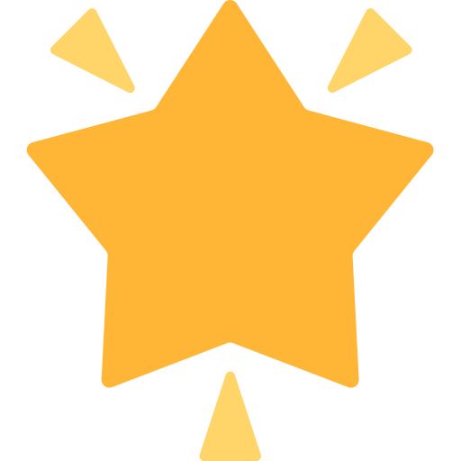

Desliza o dedo para raspar e descobrir a imagem!

Bate palmas para cortar a palavra em pedacinhos!
Clica na sílaba que pisca para conheceres a família!
Palavra 1 de 3
Junta as sílabas para construíres a palavra!
Palavra 1 de 4
Chegou a hora de escreveres sozinho!

Parabéns!
Aprendeste tudo sobre a palavra !